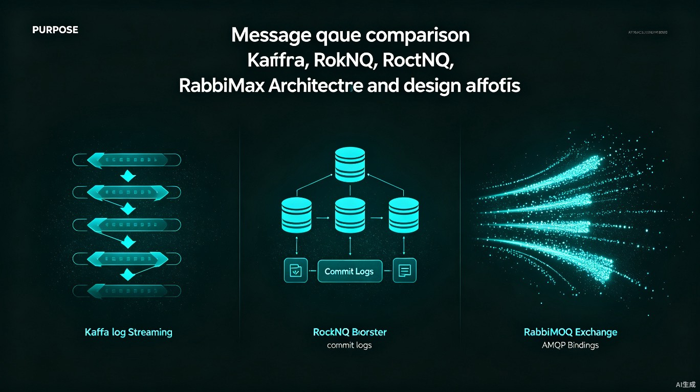

在现代分布式架构中，消息队列（MQ）扮演着系统解耦、流量削峰、异步通信的核心角色。然而，面对Kafka、RocketMQ、RabbitMQ这三款主流产品，技术团队往往陷入选择困境：Kafka吞吐量高但延迟大，RocketMQ功能丰富却生态较窄，RabbitMQ协议成熟却扩展性有限。本文将穿透表面特性，从架构设计哲学、存储模型、可靠性机制到运维复杂度，深度剖析三者背后的权衡逻辑，帮助你在具体场景下做出理性决策。
一、三种架构哲学：日志存储 vs 代理服务 vs 协议交换机
消息队列的核心差异源于其最初的设计目标。Kafka诞生于LinkedIn的日志聚合场景，RocketMQ由阿里电商业务孵化，RabbitMQ则遵循经典的AMQP协议规范。这三种不同的基因决定了它们的架构走向。
1.1 Kafka：日志即一切
Kafka将消息视为追加日志（Append-Only Log），Topic被划分为多个Partition，每个Partition是一个有序的、不可变的日志文件。生产者向日志尾部追加消息，消费者按偏移量（Offset）顺序读取。
Kafka的Broker是无状态的，元数据由ZooKeeper（或KRaft模式下的Controller）管理。这种设计的优势在于极高的顺序写入性能——现代磁盘顺序写的吞吐量接近内存，Kafka充分利用了这一硬件特性。消费端通过维护Offset实现灵活的消费位点控制，支持回溯消费、重复消费等多种模式。
Partition 0 Leader
Partition 1 Follower] B2[Broker 2
Partition 1 Leader
Partition 2 Follower] B3[Broker 3
Partition 2 Leader
Partition 0 Follower] end Z -->|管理元数据| B1 Z -->|管理元数据| B2 Z -->|管理元数据| B3 style Z fill:#12121a,stroke:#00f0ff,color:#e8e8ec
1.2 RocketMQ：NameServer的轻量治理
RocketMQ的架构可以看作对Kafka的改良与创新。它引入了NameServer作为轻量级注册中心，Broker启动时向所有NameServer注册路由信息，生产者和消费者定期从NameServer拉取Topic路由表。
与Kafka的Partition不同，RocketMQ的Topic分为多个Queue（逻辑分区），消息通过哈希或轮询路由到不同Queue。RocketMQ的核心创新在于对事务消息和定时消息的原生支持，这是Kafka和RabbitMQ都缺乏的能力。
1.3 RabbitMQ：AMQP协议的忠实实现者
RabbitMQ基于Erlang的Actor模型构建，核心抽象是Exchange（交换机）、Queue（队列）和Binding（绑定）。生产者将消息发送到Exchange，Exchange根据路由规则（Direct、Topic、Fanout、Headers）将消息分发到Queue，消费者从Queue中订阅消息。
RabbitMQ的消息模型灵活度最高，支持复杂的路由策略、消息TTL、死信队列、优先级队列等高级特性。但这种灵活性是以性能为代价的——每条消息都需要经过Exchange的路由决策，内存中维护大量的绑定关系。
二、高可用架构对比
生产环境的消息队列必须考虑节点故障时的数据安全和业务连续性。三种MQ的高可用方案差异显著。
2.1 Kafka的ISR机制
Kafka通过ISR（In-Sync Replicas）列表维护与Leader保持同步的副本。生产者可以配置acks参数：
- acks=0：发完即忘，最高吞吐，最易丢失
- acks=1：Leader确认即可，平衡方案
- acks=all：ISR中所有副本确认，最高可靠性
Kafka 2.8+引入KRaft模式，逐步摆脱对ZooKeeper的依赖，通过内置的Raft协议管理元数据，简化了部署架构。
2.2 RocketMQ的主从与Dledger
RocketMQ提供两种高可用模式：
异步主从复制（ASYNC_MASTER）：Master异步复制到Slave，写入延迟低，但故障时可能丢失未复制的消息。
同步双写（SYNC_MASTER）：Master等待Slave确认后才返回成功，数据安全性高，但写入延迟增加。
RocketMQ 4.5+引入Dledger模式，基于Raft协议实现自动故障转移，解决了传统主从模式下需要人工介入切换的问题。
2.3 RabbitMQ的镜像队列
RabbitMQ通过镜像队列（Mirrored Queue）实现高可用。队列可以在多个节点间镜像，生产者写入Master节点，消息自动同步到所有Mirror节点。消费者可以从任意节点消费，但写入必须经过Master。
Queue Master] N2[Node B
Queue Mirror] N3[Node C
Queue Mirror] end P[Producer] -->|publish| N1 N1 -->|mirror| N2 N1 -->|mirror| N3 N2 -->|consume| C1[Consumer 1] N3 -->|consume| C2[Consumer 2] N1 -.->|Master故障
提升Mirror| N2 style P fill:#0a0a0f,stroke:#00f0ff,color:#e8e8ec style C1 fill:#0a0a0f,stroke:#00f0ff,color:#e8e8ec style C2 fill:#0a0a0f,stroke:#00f0ff,color:#e8e8ec
镜像队列的缺点是写入性能受限于最慢的Mirror节点，且镜像策略配置不当会导致集群脑裂。
三、存储模型与消息顺序性
消息队列的存储模型直接决定了其持久化效率、消息查找速度和顺序性保证能力。三种MQ在存储层的设计差异极大。
3.1 Kafka的页缓存与零拷贝
Kafka的消息存储基于文件系统的页缓存（Page Cache）而非堆内存。生产者写入时，数据首先进入页缓存，由操作系统决定何时刷盘。消费者读取时，如果数据仍在页缓存中，可以直接从内存读取，无需磁盘IO。
这种设计的精妙之处在于"不对抗操作系统"。传统MQ（如ActiveMQ）试图在JVM堆中维护消息缓存，不仅受限于堆大小，还要承受GC停顿。Kafka将缓存交给操作系统管理，利用Linux内核的自动预读和缓存淘汰策略，实现了极高的IO效率。
Kafka的零拷贝（Zero-Copy）技术进一步减少了数据拷贝次数。传统文件发送流程需要4次数据拷贝和4次上下文切换，而Kafka通过sendfile系统调用，直接将数据从页缓存发送到网卡缓冲区，整个过程CPU只参与必要的元数据传递。
| 拷贝步骤 | 传统方式 | 零拷贝 |
|---|---|---|
| 磁盘→内核缓冲区 | 1 | 1 |
| 内核→用户态 | 2 | 无 |
| 用户态→内核Socket缓冲 | 3 | 无 |
| Socket缓冲→网卡 | 4 | 直接发送 |
| CPU上下文切换 | 4次 | 2次 |
3.2 RocketMQ的CommitLog与ConsumeQueue
RocketMQ采用了一种混合存储模型：所有Topic的消息都追加写入一个统一的CommitLog文件，同时维护每个Queue的ConsumeQueue索引。
统一消息存储] CQ1[ConsumeQueue 1
索引：offset+size+tag] CQ2[ConsumeQueue 2
索引：offset+size+tag] CQ3[ConsumeQueue 3
索引：offset+size+tag] end CL -->|索引指向| CQ1 CL -->|索引指向| CQ2 CL -->|索引指向| CQ3 style CL fill:#0a0a0f,stroke:#00f0ff,color:#e8e8ec
CommitLog的顺序写保证了高吞吐，ConsumeQueue的定长索引（每个条目20字节）使得消息查找极为高效。这种设计的代价是读取时需要两次IO：先读ConsumeQueue获取物理偏移，再读CommitLog获取消息内容。
RocketMQ还支持消息的顺序消费。与Kafka的Partition内有序不同，RocketMQ通过MessageQueueSelector将同一业务标识的消息路由到固定Queue，实现全局顺序消费。
// RocketMQ顺序消息发送
SendResult result = producer.send(msg, new MessageQueueSelector() {
@Override
public MessageQueue select(List<MessageQueue> mqs, Message msg, Object arg) {
Long orderId = (Long) arg;
// 同一orderId的消息进入同一Queue
long index = orderId % mqs.size();
return mqs.get((int) index);
}
}, orderId);
// 顺序消费
consumer.registerMessageListener(new MessageListenerOrderly() {
@Override
public ConsumeOrderlyStatus consumeMessage(List<MessageExt> msgs, ConsumeOrderlyContext context) {
// 同一Queue的消息串行消费
processOrder(msgs);
return ConsumeOrderlyStatus.SUCCESS;
}
});
3.3 RabbitMQ的队列级存储
RabbitMQ的存储模型最为传统。每个队列对应独立的存储文件（当消息持久化时），消息按入队顺序写入，出队时从头部删除。这种设计简单直观，但存在严重的碎片化问题——长时间运行后，队列文件中会产生大量空洞，需要执行昂贵的垃圾回收（Queue Vacuum）。
RabbitMQ 3.8+引入了Quorum Queue，基于Raft协议实现持久化，放弃了传统的镜像队列复制机制。Quorum Queue在一致性方面表现更好，但性能略逊于Classic Queue，适用于对数据安全要求极高的场景。
四、性能维度的硬碰硬
性能是MQ选型中最直观的比较维度，但需要区分吞吐量和延迟两个指标，它们往往此消彼长。
3.1 吞吐量对比
| MQ产品 | 单节点吞吐（msg/s） | 集群吞吐潜力 | 关键制约因素 |
|---|---|---|---|
| Kafka | 100万+ | 线性扩展 | 磁盘带宽、网卡 |
| RocketMQ | 50万+ | 近线性扩展 | 磁盘IO、内存 |
| RabbitMQ | 5-10万 | 集群非线性扩展 | 内存容量、Erlang VM |
Kafka的吞吐量优势源于顺序写磁盘和零拷贝（Zero-Copy）技术。消息读取时，Kafka通过sendfile系统调用直接将文件数据从Page Cache发送到网卡，避免了用户态和内核态的数据拷贝。
RocketMQ在阿里双11场景下经过极限验证，其性能足以支撑电商峰值，但略逊于Kafka的纯日志模型。
RabbitMQ的消息默认驻留内存，虽然支持持久化，但持久化消息的写入性能会大幅下降。其集群吞吐量并非随节点数线性增长，因为镜像队列的写入仍受限于单Master。
3.2 延迟对比
| 场景 | Kafka | RocketMQ | RabbitMQ |
|---|---|---|---|
| 空载单条延迟 | 2-5ms | 2-4ms | 1-3ms |
| 批量写入延迟 | 10-100ms | 5-50ms | 不适用 |
| 高并发P99延迟 | 50-200ms | 20-100ms | 10-50ms |
| 跨可用区延迟 | +5-20ms | +5-15ms | +5-15ms |
RabbitMQ在低延迟场景下占优，尤其当消息无需持久化时，纯内存操作的延迟可以控制在毫秒以内。Kafka的延迟主要来自批量处理策略——为了高吞吐，生产者会累积一定量消息或等待一定时间（linger.ms）再发送，这天然增加了端到端延迟。
3.3 延迟优化的配置示例
Kafka低延迟配置：
# producer.properties
linger.ms=0 # 不等待，立即发送
batch.size=1 # 最小批量
acks=1 # Leader确认即可
compression.type=none # 禁用压缩，减少CPU开销
# consumer.properties
fetch.min.bytes=1 # 最小获取1字节
fetch.max.wait.ms=0 # 不等待
RocketMQ低延迟配置：
DefaultMQProducer producer = new DefaultMQProducer("low-latency-group");
producer.setRetryTimesWhenSendFailed(0);
producer.setSendMsgTimeout(1000);
// 同步发送，等待确认
SendResult result = producer.send(msg, new MessageQueueSelector() {
@Override
public MessageQueue select(List<MessageQueue> mqs, Message msg, Object arg) {
return mqs.get(0); // 固定队列，减少路由开销
}
}, null);
四、可靠性：消息不丢失的保障机制
不同业务对消息可靠性的要求截然不同。日志采集允许少量丢失，金融交易则要求零丢失。
4.1 生产者端可靠性
| 机制 | Kafka | RocketMQ | RabbitMQ |
|---|---|---|---|
| 发送确认 | acks参数 | SendResult回调 | Publisher Confirm |
| 失败重试 | retries参数 | setRetryTimesWhenSendFailed | 客户端实现 |
| 本地事务 | 不支持 | 支持事务消息 | 不支持 |
| 最大努力投递 | 支持 | 支持 | 支持 |
RocketMQ的事务消息是其独特优势，适用于分布式事务场景：
TransactionListener transactionListener = new TransactionListener() {
@Override
public LocalTransactionState executeLocalTransaction(Message msg, Object arg) {
try {
// 执行本地数据库事务
orderService.createOrder(msg);
return LocalTransactionState.COMMIT_MESSAGE;
} catch (Exception e) {
return LocalTransactionState.ROLLBACK_MESSAGE;
}
}
@Override
public LocalTransactionState checkLocalTransaction(MessageExt msg) {
// 回查本地事务状态
boolean exists = orderService.checkOrderExists(msg.getTransactionId());
return exists ? LocalTransactionState.COMMIT_MESSAGE : LocalTransactionState.ROLLBACK_MESSAGE;
}
};
TransactionMQProducer producer = new TransactionMQProducer("transaction-group");
producer.setTransactionListener(transactionListener);
producer.start();
producer.sendMessageInTransaction(msg, null);
4.2 Broker端可靠性
| 机制 | Kafka | RocketMQ | RabbitMQ |
|---|---|---|---|
| 同步复制 | acks=all | SYNC_MASTER | 镜像队列 |
| 刷盘策略 | flush.messages/flush.ms | 同步/异步刷盘 | 持久化模式 |
| 消息确认 | Offset Commit | ConsumeConcurrentlyStatus | Basic.Ack |
| 死信队列 | 需自行实现 | 支持重试队列+死信 | 原生死信交换机 |
4.3 消费者端可靠性
消费者端的可靠性关键在于消费确认机制：
- Kafka：手动提交Offset，消费失败后可以选择不提交（重复消费）或重置Offset（重新消费）
- RocketMQ：返回
RECONSUME_LATER进入重试队列，超过阈值进入死信队列 - RabbitMQ：手动Ack或Nack，Nack后消息进入死信队列或重新入队
五、运维复杂度：隐藏的选择成本
选型时不仅要考虑功能，更要评估团队的运维能力。
5.1 部署复杂度
- Kafka：依赖ZooKeeper（或KRaft），集群最少3个ZK + 3个Broker，部署脚本成熟
- RocketMQ：NameServer无状态可水平扩展，Broker需成对部署（主从），部署相对复杂
- RabbitMQ：单节点部署最简单，但集群配置（尤其是镜像队列策略）需要精细调优
5.2 监控与生态
| 维度 | Kafka | RocketMQ | RabbitMQ |
|---|---|---|---|
| 开源监控方案 | Kafka Metrics + Prometheus | RocketMQ Console | RabbitMQ Management Plugin |
| 商业支持 | Confluent | 阿里云MQ | CloudAMQP |
| 云原生集成 | Kubernetes Operator完善 | 阿里云集成好 | Helm Chart成熟 |
| 客户端语言 | Java最优，多语言成熟 | Java最优，其他一般 | 多语言均成熟 |
| 社区活跃度 | 极高 | 中等（阿里主导） | 高（VMware支持） |
5.3 常见故障处理
| 故障类型 | Kafka | RocketMQ | RabbitMQ |
|---|---|---|---|
| 磁盘满 | 分区不可写，需扩容或删除旧数据 | 写入拒绝，需清理或扩容 | 内存阻塞，流控触发 |
| 网络分区 | 依赖ZK判断，可能进入Unclean Leader选举 | NameServer定期心跳检测 | 可能脑裂，需配置自动处理 |
| 消息积压 | 消费者扩容，增加分区数 | 消费者扩容，调整拉取线程 | 增加消费者，调整QoS |
| 消费延迟 | 监控Consumer Lag | 监控Consume TPS/RT | 监控Queue Depth |
六、选型决策矩阵
综合以上分析，以下决策矩阵可以帮助快速定位合适的MQ：
| 业务场景 | 推荐MQ | 核心原因 |
|---|---|---|
| 大数据日志采集 | Kafka | 吞吐极限高，与Spark/Flink生态集成好 |
| 电商交易/订单 | RocketMQ | 事务消息、定时消息、高可靠 |
| 实时流处理 | Kafka | 与Kafka Streams/ksqlDB深度集成 |
| 复杂路由策略 | RabbitMQ | Exchange灵活，AMQP标准 |
| 企业内部异步通信 | RabbitMQ | 部署简单，多语言客户端成熟 |
| 金融支付核心链路 | RocketMQ/Kafka | 事务能力+强一致性 |
| 物联网海量设备上报 | Kafka | 水平扩展能力最强 |
| 延迟队列需求 | RocketMQ | 原生支持18级定时延迟 |
6.1 混合架构的可行性
在大型系统中，单一MQ往往无法满足所有需求。常见的混合架构是： - Kafka 负责日志采集和流计算数据管道 - RocketMQ 负责核心业务异步处理和分布式事务 - RabbitMQ 负责通知推送、任务调度等轻量级场景
这种架构的代价是运维复杂度的叠加，需要团队具备多技术栈的运维能力。
七、云原生时代的MQ演进
随着Kubernetes成为基础设施的事实标准，消息队列的云原生化能力越来越影响选型决策。
7.1 Kafka的云原生之路
Apache Kafka在KRaft模式推出后，彻底摆脱了对ZooKeeper的依赖，集群部署复杂度大幅降低。Confluent和Strimzi提供的Kubernetes Operator使得Kafka的扩缩容、滚动升级、监控配置都可以在声明式API中完成。
Kafka在云环境中的挑战主要在于存储。有状态Pod的本地存储在节点迁移时会丢失数据，因此生产环境通常采用网络存储或云厂商提供的托管Kafka服务（如AWS MSK、阿里云消息队列Kafka版）。
7.2 RocketMQ的云原生适配
RocketMQ 5.0版本推出了Proxy模式，将计算层（Broker的逻辑处理）与存储层分离。Proxy无状态化后可以水平扩展，存储层则专注于CommitLog的持久化。这种分层架构与云原生的理念高度契合。
阿里云RocketMQ（原ONS）是国内使用最广泛的托管消息服务，提供了从开源版到企业版的平滑升级路径。对于已经使用阿里云基础设施的团队，选择RocketMQ可以获得最佳的集成体验。
7.3 RabbitMQ的轻量优势
RabbitMQ的单节点部署极为轻量，一个Pod即可启动，非常适合Kubernetes环境。其官方提供的Helm Chart和Operator成熟度很高， StatefulSet部署配合PersistentVolumeClaim即可实现有状态运行。
RabbitMQ 3.11+引入了Streams（流式队列），在保持AMQP兼容的同时提供了类Kafka的日志存储语义，这是RabbitMQ向高吞吐场景拓展的重要信号。
| 云原生特性 | Kafka | RocketMQ | RabbitMQ |
|---|---|---|---|
| Kubernetes Operator | 成熟（Strimzi/Confluent） | 官方支持 | 官方成熟 |
| 无状态化程度 | KRaft后提升 | Proxy模式分离计算存储 | 原生较简单 |
| 云厂商托管服务 | AWS MSK/Azure/阿里 | 阿里云为主 | CloudAMQP/AWS |
| 存储与计算分离 | 逐步支持 | 5.0原生支持 | Streams部分支持 |
八、写在最后
消息队列的选型没有银弹。Kafka以吞吐量为王，适合数据管道和流处理；RocketMQ以功能丰富见长，适合电商和金融场景；RabbitMQ以灵活易用取胜，适合中小规模的企业集成。
在实际决策中，建议遵循以下流程： 1. 明确业务对吞吐、延迟、可靠性的优先级排序 2. 评估团队的技术储备和运维能力 3. 在测试环境进行同条件压测 4. 考虑生态兼容性和长期维护成本 5. 评估云原生部署需求和云厂商锁定风险
技术的本质是在约束条件下做最优权衡，理解每种MQ的设计哲学，才能在架构选型时心中有数。而当单一MQ无法满足全部需求时，混合架构并非不可接受——关键是明确每种MQ的职责边界，并建立统一的观测和告警体系。